มาสร้างเว็บจำลองการสอบ HSK แบบ Full Option!
จัดเต็มทั้งระบบ ฟัง (มีเสียงอ่าน), อ่าน, และเขียน ทีละสเตปให้ทุกคนมีส่วนร่วม
เราจะค่อยๆ ประกอบร่างเว็บขึ้นมา เพื่อให้ทุกคนได้เห็นกลไกการทำงานเบื้องหลังของแอปพลิเคชัน
| สเตป | เราจะทำอะไรกัน? |
|---|---|
| 1สร้างข้อมูล (JSON) | ให้ AI แต่งข้อสอบ 3 หมวด (ฟัง, อ่าน, เขียน) จากคำศัพท์ที่เรามี |
| 2สร้างหน้าตาเว็บ (UI) | วาดหน้าเริ่มสอบ และสร้างโครงสำหรับแสดงข้อสอบทั้ง 3 หมวด |
| 3ติดระบบเสียง & แผงข้อสอบ | ภารกิจพิเศษ! สั่ง AI เพิ่มปุ่มกดฟังเสียง และแผงข้อสอบ (Palette) |
| 4ระบบตรวจคะแนน | เพิ่มตัวจับเวลา และหน้าสรุปผลการสอบอย่างละเอียด |
I have attached a Chinese vocabulary file.
Act as a professional Chinese language teacher and create an HSK mock exam.
Divide the exam into 3 sections:
- listening: __LISTENING__ questions
- reading: __READING__ questions
- writing: __WRITING__ questions
Section details:
1. listening - Multiple choice (4 options) with an audio sentence and a question.
2. reading - Multiple choice (4 options) fill-in-the-blank questions.
3. writing - Subjective. Provide the Thai translation and require the user to type the correct Chinese characters.
Please format the output strictly as a "JSON" object using this exact structure:
{
"listening": [
{ "id": 1, "audio": "ประโยคสนทนาภาษาจีน...", "question": "คำถาม...", "choices": [ {"label": "A", "zh": "ตัวเลือก A"}, ...ถึง D ], "answer": "A", "expl": "เฉลยสั้นๆ" }
],
"reading": [
{ "id": 11, "question": "คำถามเว้นช่องว่าง...", "choices": [ {"label": "A", "zh": "ตัวเลือก A"}, ...ถึง D ], "answer": "A", "expl": "เฉลยสั้นๆ" }
],
"writing": [
{ "id": 21, "question": "พิมพ์คำศัพท์ภาษาจีนที่มีความหมายว่า: [คำแปล]", "py": "พินอินของคำตอบ", "answer": "อักษรจีนที่ถูกต้อง", "expl": "เฉลย" }
]
}
Strict rule: Output ONLY a single JSON code block. Do not include any other explanations.
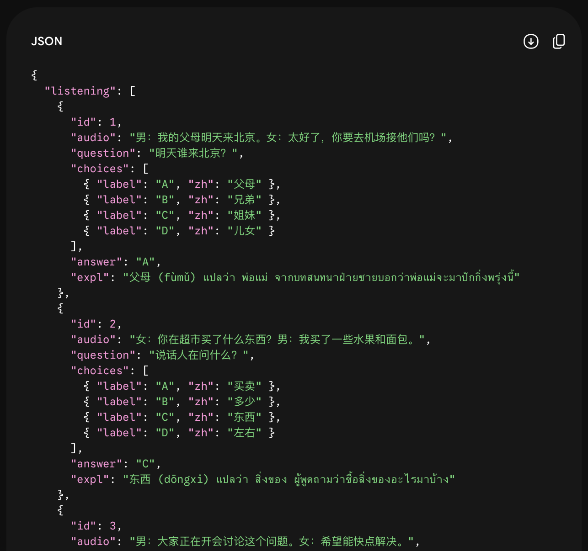
Please build an HSK mock exam Web App for me. Write everything in a single HTML file. Do not separate the files; I will open it directly in my browser. ## Exam Data (DATA) Please look back at the JSON exam data you generated in your previous message in this conversation, and embed that data into a JavaScript variable named `EXAM_DATA`. Do NOT ask me to paste it again. ## Web Design (Use Tailwind CSS via CDN) - **Important Font Setup:** Import the Google Font "K2D" as the main font to display Thai beautifully on Mac and Windows. - Use a light cream background (#fdf8f5) and dark gray for main text. - Primary buttons should be orange (#d35400) with modern rounded-2xl cards and shadows. ## Version 1 Features: Structure and Tabs 1. **Start Screen (หน้าจอเริ่มสอบ):** Display the app name, an input field for "กรอกชื่อผู้สอบ" (enter name), and a start button. 2. **Exam Screen (หน้าทำข้อสอบ):** - Have 3 tabs at the top: "🎧 การฟัง" (Listening), "📖 การอ่าน" (Reading), "✍️ การเขียน" (Writing). - Clicking "ถัดไป" (Next) repeatedly should automatically switch from Listening to Reading to Writing sections. - Listening/Reading sections: Display the question and 4 clickable choice buttons. - Writing section: Display the question with a text input field for the answer. Rule: Do NOT use <script type="module"> and do NOT fetch external data. Output the code as a single block.
exam.html แล้วเปิดดู เราจะได้เว็บที่มีแท็บ 3
หมวดแล้ว! (แต่พาร์ทฟังยังไม่มีเสียงนะ)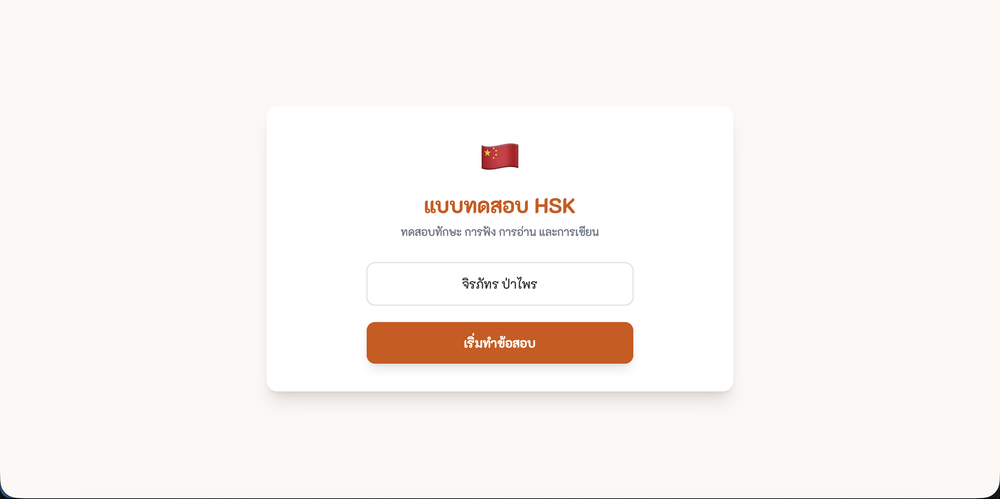
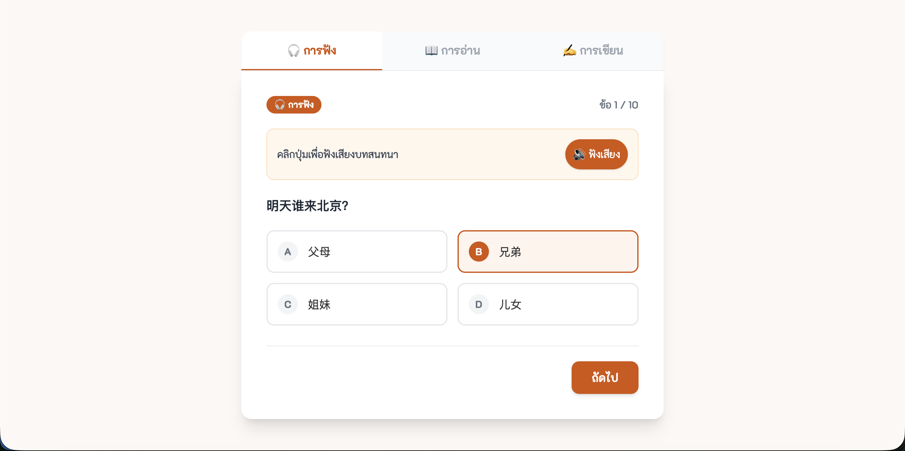
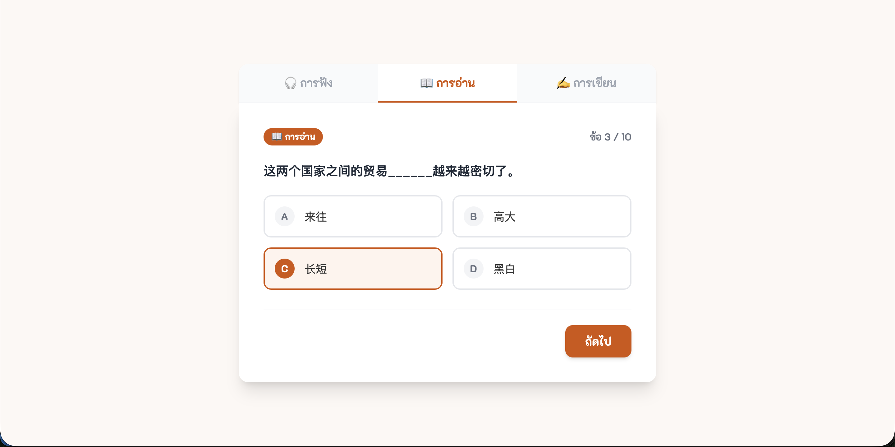
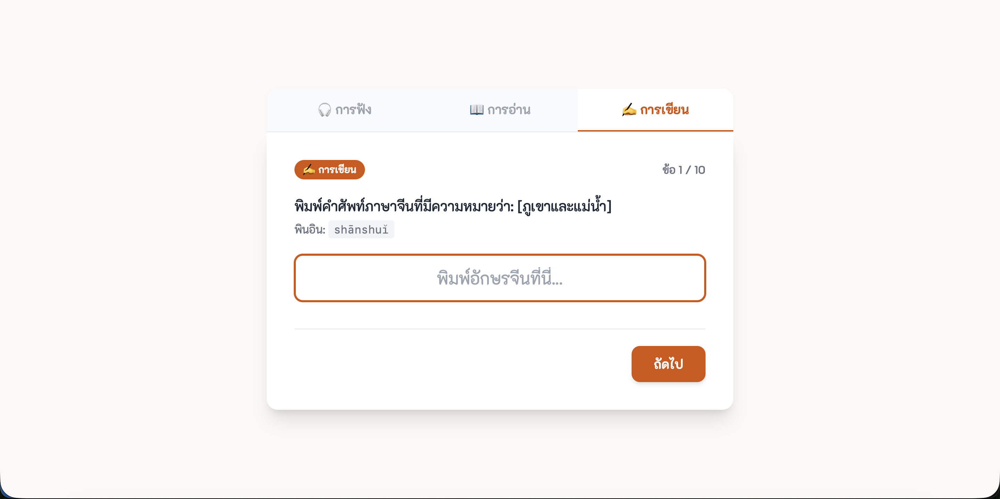
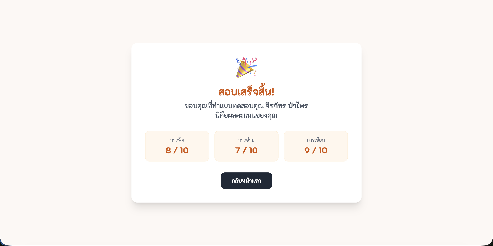
Excellent! Now I want to add more interactive functions to the existing code.
Please upgrade the code and output the full updated HTML file.
Features to add:
1. **Text-to-Speech:** In the "การฟัง" (Listening) section, add a "▶ ฟังเสียง" (Play Audio) button above the question. When clicked, use `window.speechSynthesis` to read out the Chinese text from the `audio` field in the JSON. Set the voice language to Chinese ('zh-CN').
2. **Question Palette (แผงข้อสอบ):** Create a small button at the bottom of the screen that opens a pop-up grid of all question numbers.
- Questions that have been answered should turn solid orange.
- Unanswered questions should have a gray border.
- Clicking a question number should immediately jump to that question.
Same rule: Combine everything in a single HTML file. Do NOT cut or split the code block.
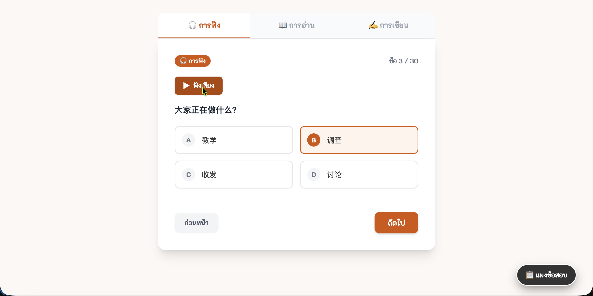
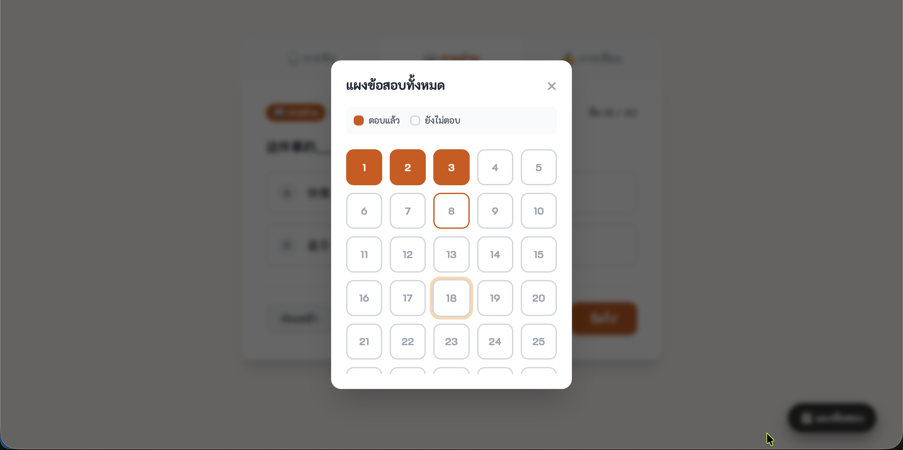
Great! For the final step, let's implement the grading system. Please upgrade the code and output the final, complete HTML version. Features to add: 1. **Countdown Timer (แถบจับเวลา):** At the top corner, display a total countdown timer of [👉 ใส่เวลาสอบ เช่น 15 👈] minutes. It must keep running regardless of which tab is active. When the time is up, force submit the exam immediately. 2. **Result Screen (หน้าจอผลสอบ):** When clicking the "ส่งข้อสอบ" (Submit) button (on the last question of the writing section), transition to the summary screen. 3. **Result Details:** - Display the total score prominently (e.g., 10/15). - Display 3 separate boxes showing the score for Listening, Reading, and Writing. - **Strengths (จุดเด่น):** Based on the results, highlight which skill(s) the student performed best in, with a brief encouraging message. - **Areas to Improve (จุดควรพัฒนา):** Identify which skill(s) the student scored lowest in, and suggest what to focus on practicing. - **Answer Review (เฉลยรายข้อ):** Show a detailed answer key for every question. For each item, show the question, whether the answer was correct or wrong, the correct answer, and the explanation from the `expl` field in the JSON. - Include a "กลับสู่หน้าแรก" (Return to Home) button to retake the exam. Output everything in a single HTML file without cutting off the code.
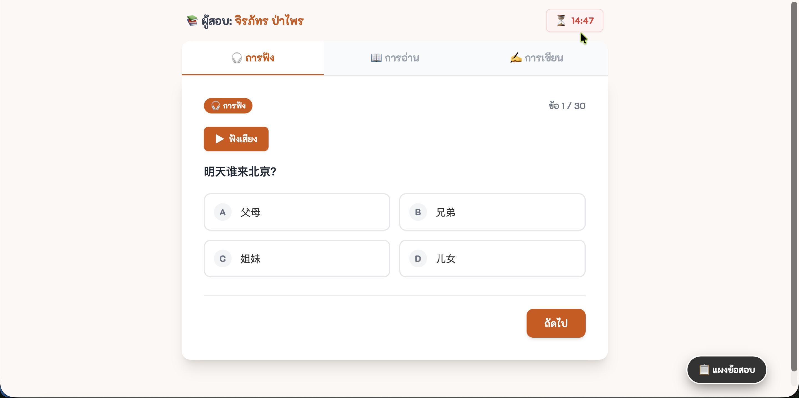
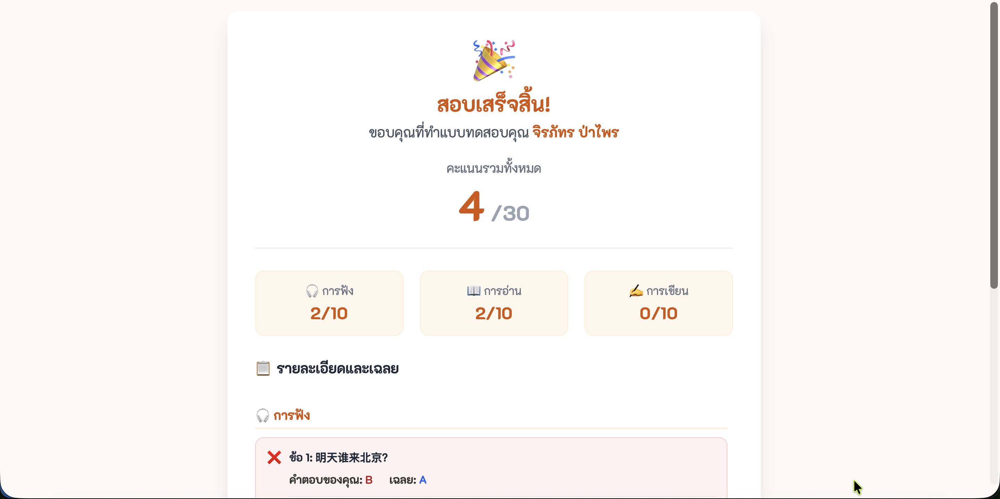
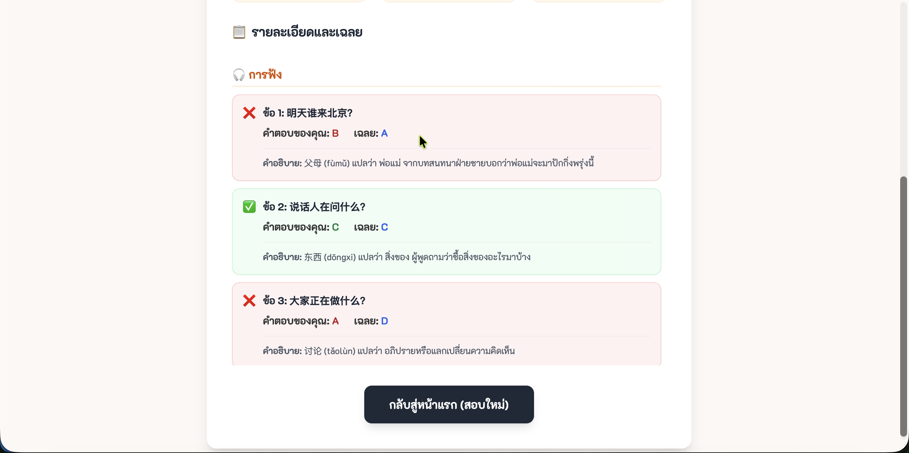
หากเปิดเว็บแล้วจอดับ หรือ AI พิมพ์โค้ดไม่จบ ให้ก๊อปปี้ข้อความนี้ไปสั่งให้ AI ซ่อมครับ:
| ปัญหาที่เจอ | ประโยคสำหรับสั่ง AI ให้ช่วยซ่อมโค้ด |
|---|---|
| เปิดมาแล้วหน้าจอขาวโพลน |
โค้ดที่ให้มาพอเปิดในเบราว์เซอร์แล้วหน้าจอขาวโพลน ไม่มีอะไรขึ้นเลย น่าจะมีบั๊กหรือพิมพ์ผิดไวยากรณ์ ช่วยตรวจสอบการอ้างอิงฟังก์ชันตัวแปร และส่งโค้ดที่ซ่อมแล้วมาให้ใหม่ทั้งหมด
|
| AI พิมพ์โค้ดมาให้ครึ่งเดียว แล้วหยุด |
โค้ดถูกตัดกลางคัน พิมพ์โค้ดมาไม่ครบ โปรดเขียนโค้ดที่เหลือต่อจากบรรทัดสุดท้ายให้จบสมบูรณ์ในกล่องโค้ดเดียว (ห้ามแยกไฟล์เด็ดขาด)
|
| คลิกปุ่มหรือระบบเสียงไม่ทำงาน |
ปุ่มบนเว็บหรือระบบเสียงกดแล้วไม่ทำงาน ช่วยตรวจสอบระบบคำสั่ง (JavaScript) และแก้ไขโค้ดให้กลับมาทำงานได้ปกติ
|